화면 점검 구현 — 정적 시안만 있던 다섯 줄의 전후
지금 = main(3000) · 바꾼 뒤 = 구현 브랜치(3005). 1부 아홉 줄과 2-6·2-7 은 시안 브랜치 커밋을 그대로 가져와 변경비교.md 의 캡처와 같은 화면이다.
2-1. 첫 화면 가치 문장 (B안)
/


2-2. 소개 끝에 회원가입·크리에이터 찾기 (로그인 전만)
/about

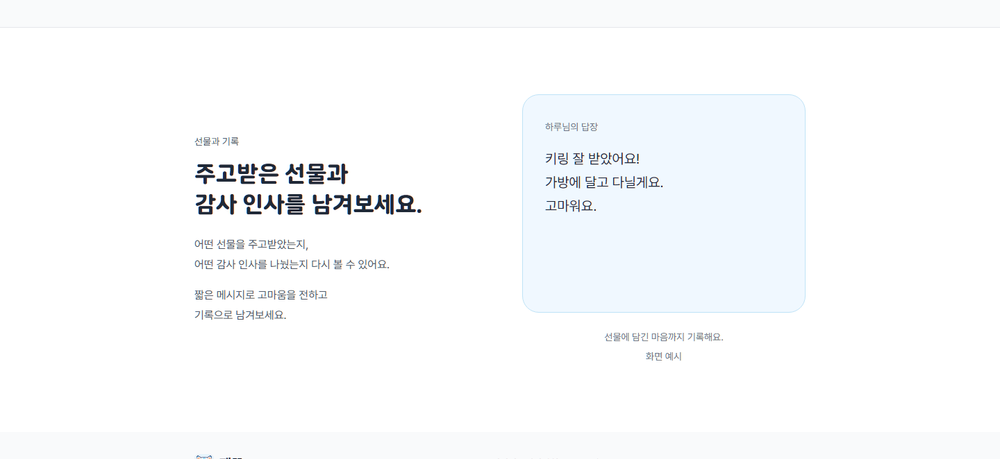

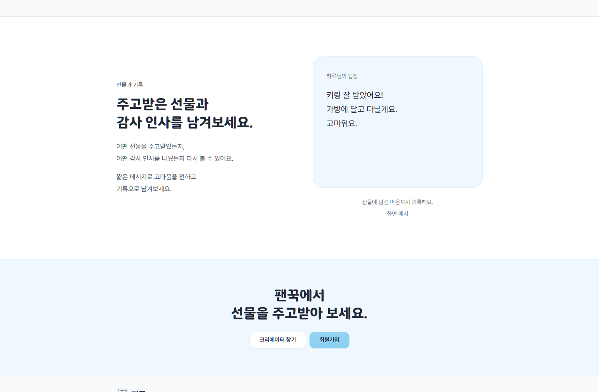

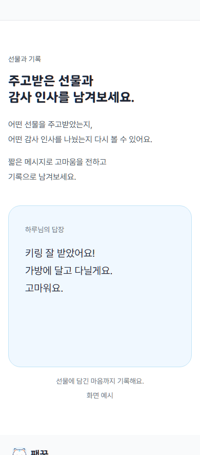

2-3. 팬 이용 안내 끝 「크리에이터 찾기」 (로그인 전만)
/guide/fan

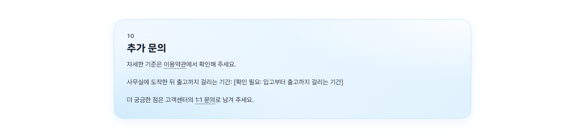

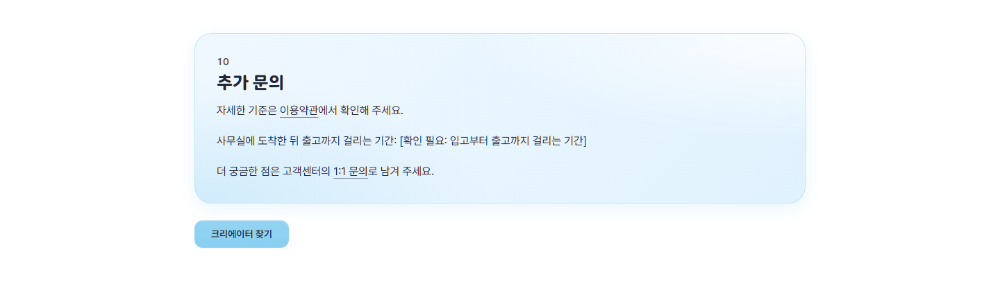

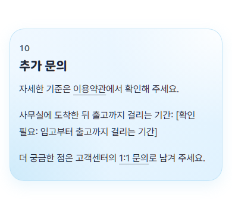

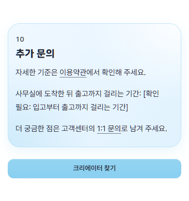
2-4. 크리에이터 이용 안내 끝 「크리에이터로 가입」 (로그인 전만)
/guide/creator

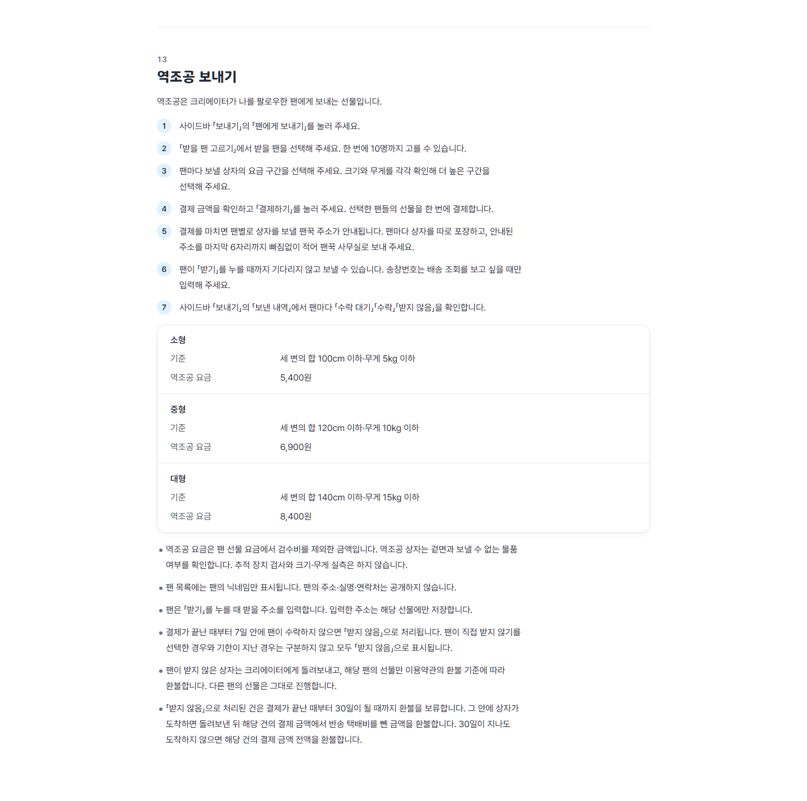

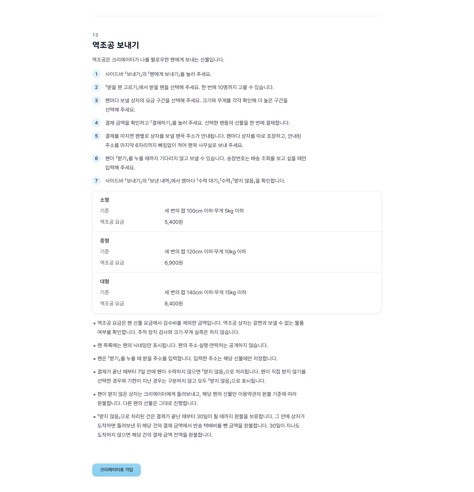

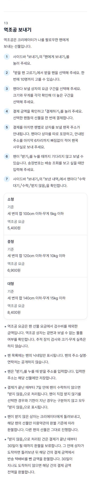

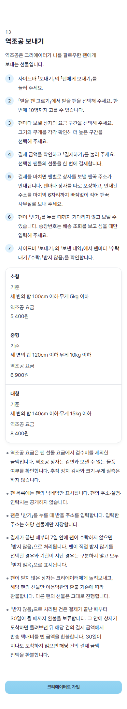
2-5. 신고·문의 버튼 둘레 한 줄로
/report

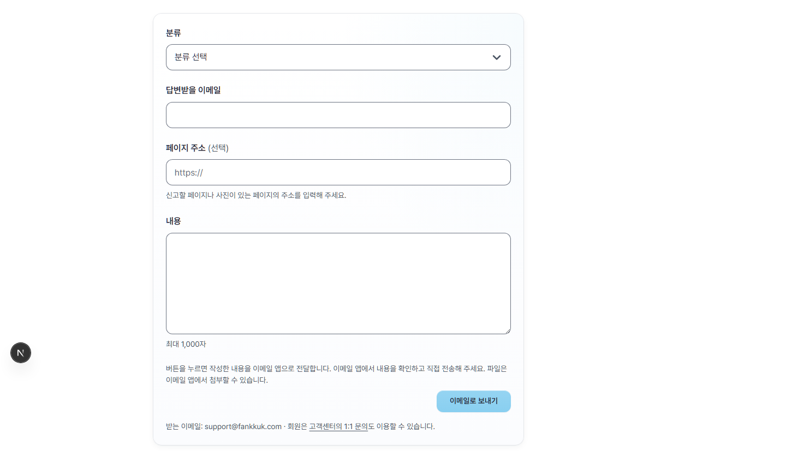

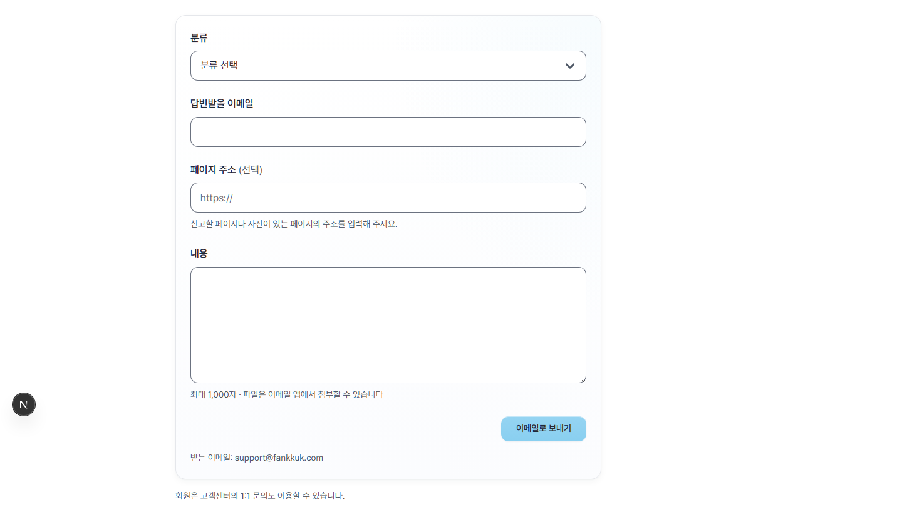